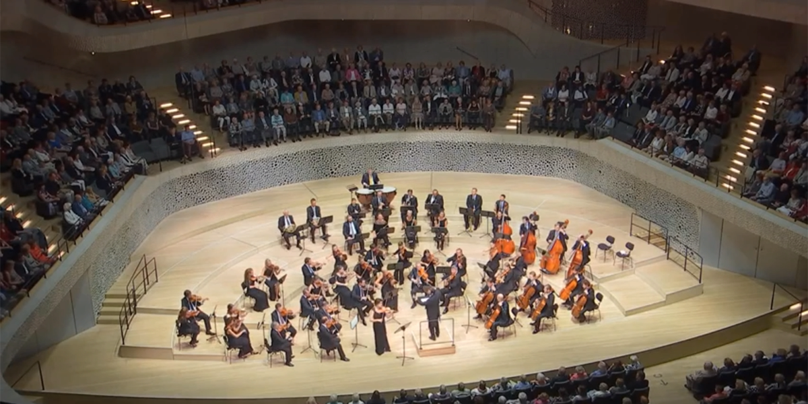
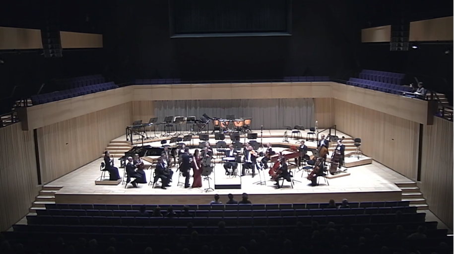
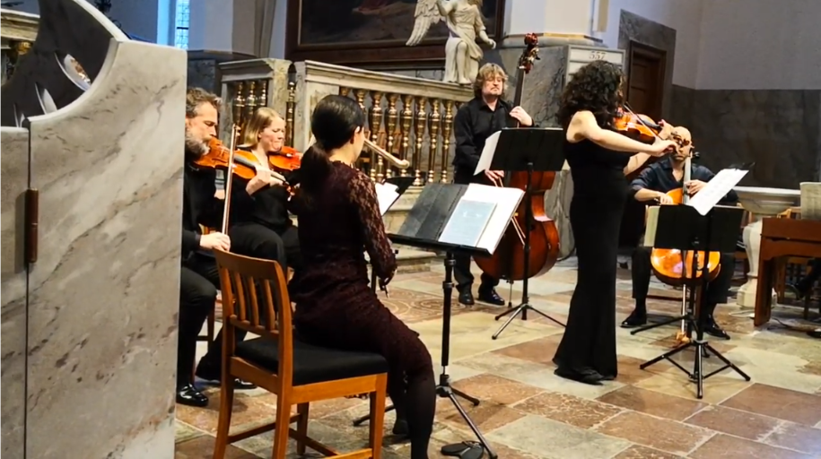
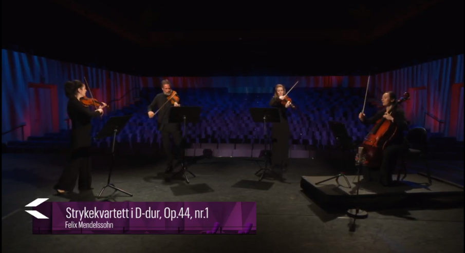
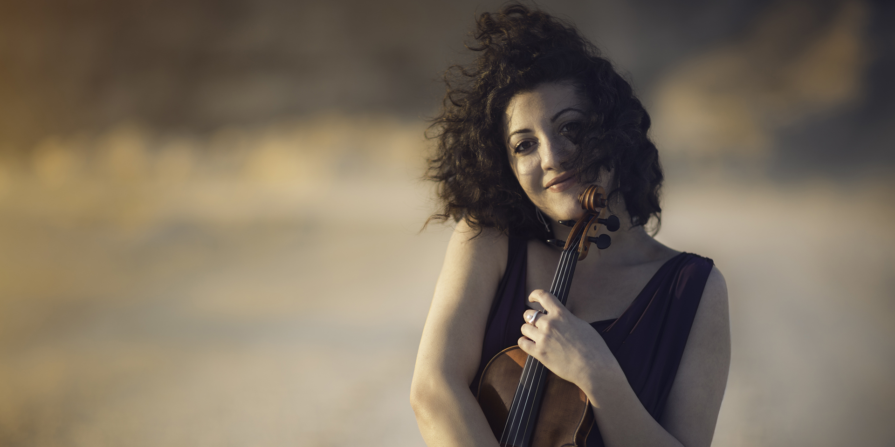
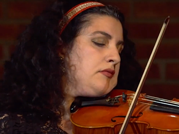
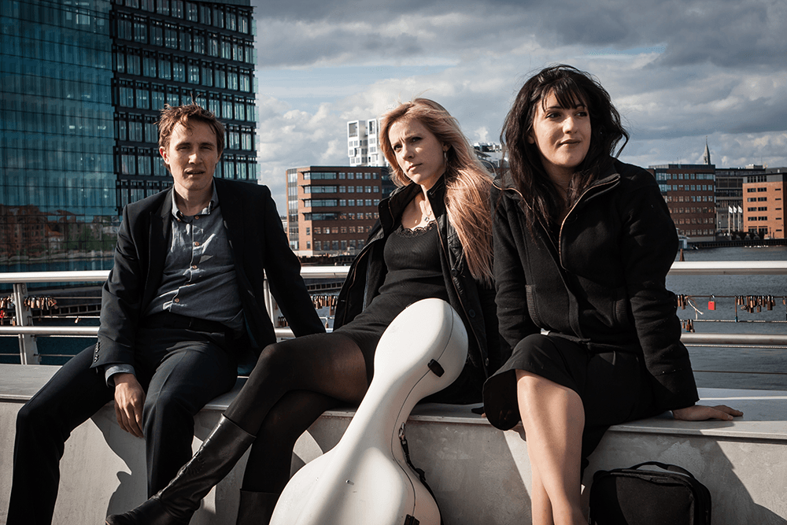
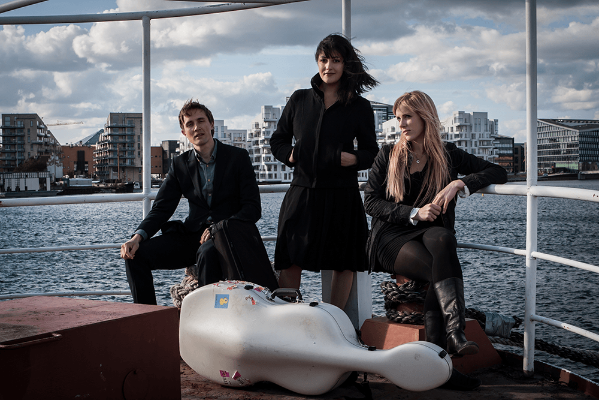
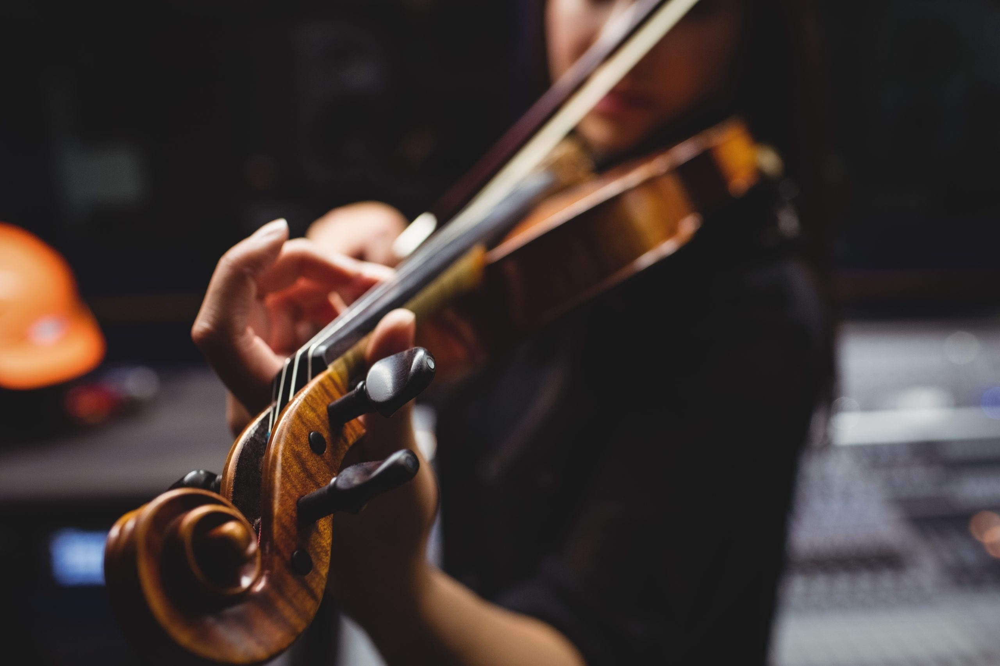

Here is a selection of videos, pictures and other media

F. Mendelssohn – Concerto for violin and orchestra
Loussine Azizian, violin
Felix Bender, conductor
Neue Philharmonie Hamburg
Elbphilharmonie 8th September 2018

G. Pergolesi – Violin concerto
Giordano Bellincampi, conductor
Kristiansand Symphony Orchestra
Live performance in Kilden Concert Hall 19th January 2017

A. Piazzolla – La Primavera Porteña
Scandinavian Chamber Soloists
Trinitatis Church in Copenhagen on 15th February 2020

F. Mendelssohn – String quartet in d minor, op.44
Loussine Azizian, 1. violin
Pål Svendsberget, 2. violin
Edda Stix, viola
Ariel de Wolf, cello
Recorded 5th of May 2020 in Kilden Concert Hall, Kristiansand
Händel-Halvorsen – Passacaglia
Huayra Duo
Leonardo Sesenna, cello
15th November 2017 in Kilden Concert Hall, Kristiansand





You can send a message to Lucy using the form: